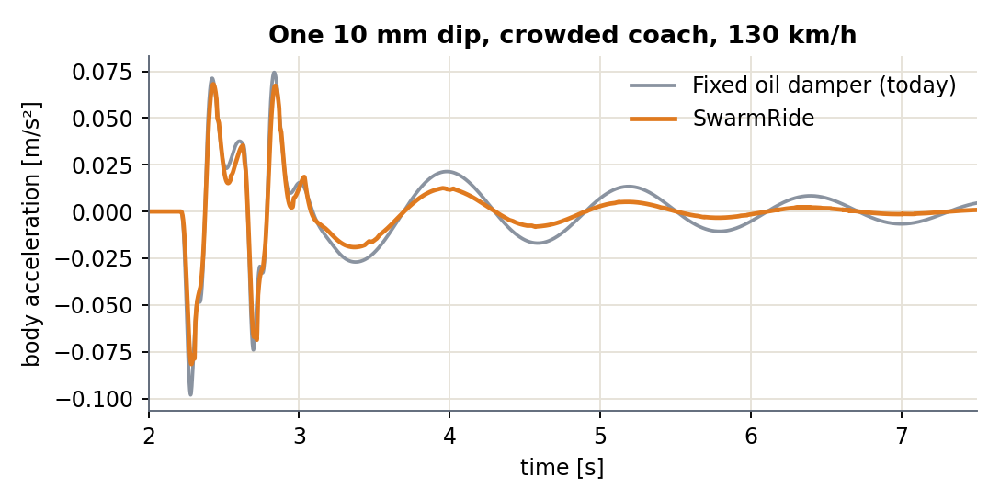
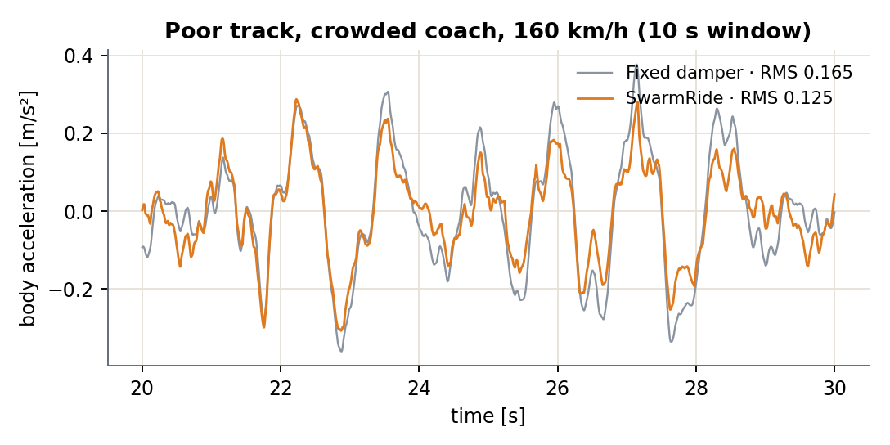
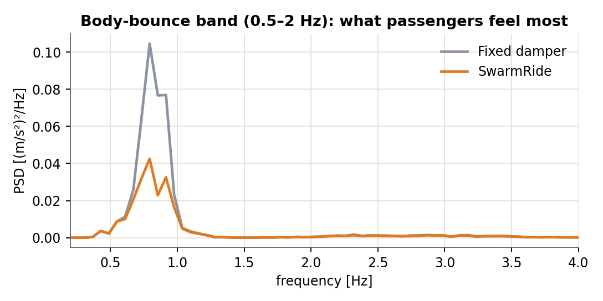
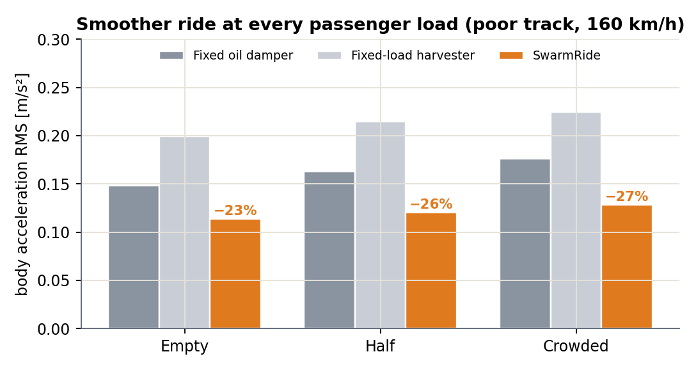
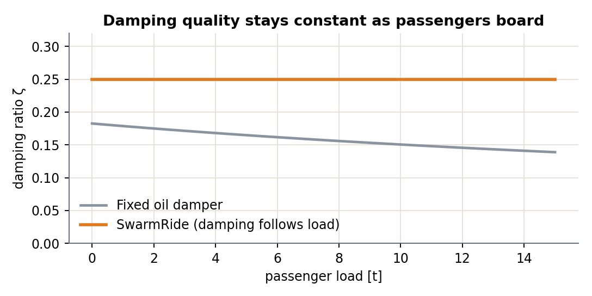
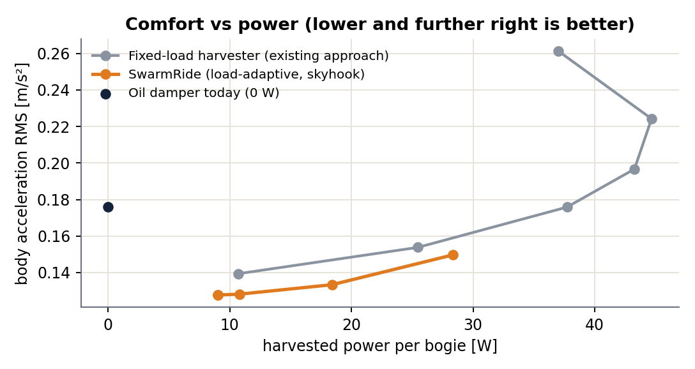
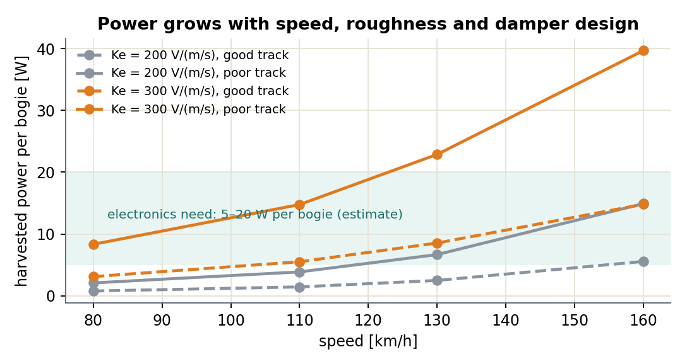
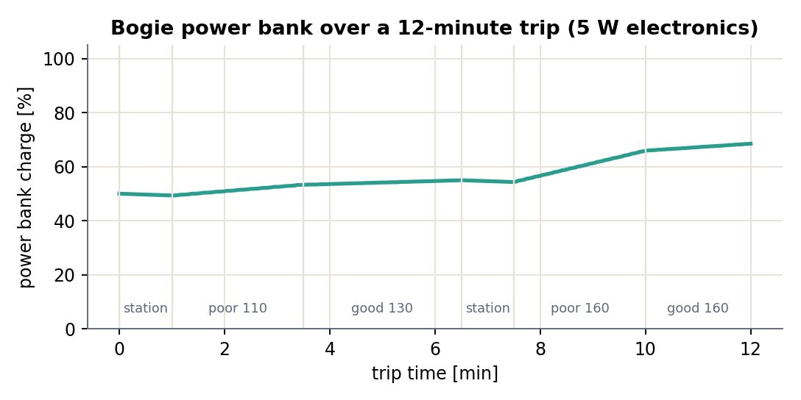

One model, one track, four controllers. Every result on the next pages comes from running this structure; nothing is drawn by hand.

Proves: after a 10 mm dip, peak body acceleration drops from 0.10 to 0.08 m/s² (17% lower) and the bounce settles sooner.
Pass condition: lower peak and faster settling than the oil damper.

Proves: on poor track at 160 km/h with a crowded coach, body vibration falls from 0.165 to 0.125 m/s² RMS (24% lower).
Pass condition: lower RMS acceleration on identical track.

Proves: in the 0.5–2 Hz band passengers feel most, vibration falls 30% (0.157 → 0.110 m/s²). Above 6 Hz it rises slightly (0.007 → 0.009 m/s²) from fast damping changes; Simulink adds command smoothing.
Pass condition: lower vibration in the 0.5–2 Hz band.

Proves: vibration is 23%, 26% and 27% lower for empty, half and crowded coaches. Ride index Wz: 1.90 → 1.69 when crowded.
Pass condition: better than both the oil damper and a fixed-load harvester at every load.

Proves: a fixed damper loses damping quality as people board; SwarmRide holds it at the chosen target.
Pass condition: constant damping ratio from empty to crowded.

Proves: at the same 10–28 W, SwarmRide always rides smoother than a fixed-load harvester. Fixed-load harvesters reach 45 W only by making the ride 28% worse than today's oil damper.
Pass condition: SwarmRide curve below the fixed-load curve at equal power.

Proves: at 160 km/h: 6 W (good track) to 15 W (poor track) per bogie with today's damper design; a stronger magnet/coil (Ke = 300) gives 15 to 40 W.
Pass condition: harvest above the electronics need on typical routes.

Proves: over a 12-minute trip with station stops, the power bank ends at 68% with 5 W electronics and the Ke = 300 design.
Pass condition: charge never hits zero; ends at or above the start.
| Claim | Preliminary result | Status |
|---|---|---|
| Smoother ride on a bump | 17% lower peak | PASS |
| Smoother ride on real track | 24% lower RMS (poor, crowded, 160 km/h) | PASS |
| Better at every load | 23–27% lower RMS, empty to crowded | PASS |
| Better than existing harvesters | SwarmRide curve beats the fixed-load curve | PASS |
| Purely regenerative (never pushes) | F·v_rel ≥ 0 in every step (minimum 0.0) | PASS |
| Small high-frequency side effect | above 6 Hz: 0.007 → 0.009 m/s² (smooth the damping command) | NEEDS WORK |
| Stroke within limits | max 12.0 mm vs 13.4 mm today (limit ±40 mm assumed) | PASS |
| Power above electronics need | good track 1–6 W (Ke 200) · 3–15 W (Ke 300) | NEEDS WORK |
| Power bank stays charged | ends trip at 68% (Ke 300, 5 W electronics) | PASS |
| Bump preview (C3) adds comfort | to be built in Simulink (week 6) | NEXT |
| Fail-safe equals passive damper | to be built in Simulink (week 5) | NEXT |